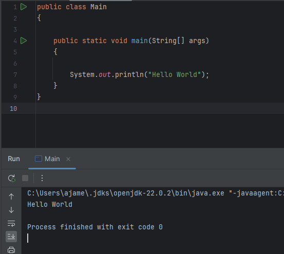
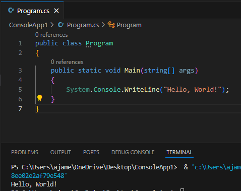

Java is a big part of FRC. For the past three years I have used java to program the robots for the 7178 Yeti team. Recently the Oakland County robotics competition switched to using java so this previous bot was programmed in javaI am also working towards getting certified in Java at the Oakland Technical School
C# was the first language I ever learned. At first I used it to program in Unity. I made a few test projects with Unity but later moved on to other non-Unity projects. Recently I have started learning networking using C#. I'm learning by making a chat app with a GUI.
I have always had an interest in what make things tick. C is a great way to learn how computers work so I have started researching and learning C. I have made a tiny platformer and am currently working on A terminal project
I'm not currently actively learning Rust but it is the next language I would like to start learning due to the community around Rust. The open source nature of Rust allows the community to be rich, easily share resourses and fix any issues found with the language. On top of that there are a lot of cool projects like Bevy, a game engine and Ruffle, a Flash Player Emulator.